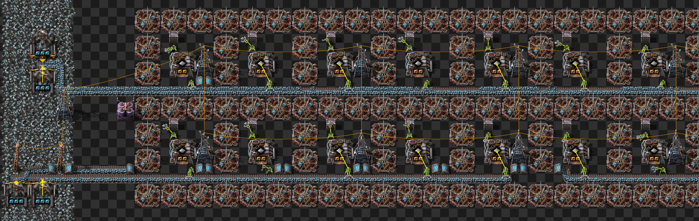
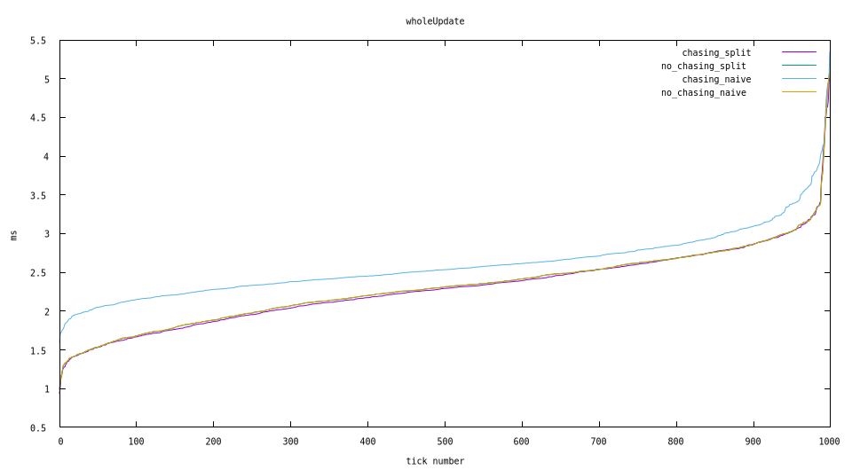

Situationally there can be performance improvement to using the prototype inserter_chases_belt_items = false, but design can eliminate the difference.
The Factorio modding API includes an option to turn off inserter chas belt items. Ref
Does this option improve performance and in what scenarios?
Two map variants, two half belts versus one full belt feeding a total of 10 furnances. Each of the two designs cloned to a large amount of production.
These two map variants are benchmarked without mods, and then benchmarked with this mod: https://mods.factorio.com/mod/zzzzStopChasingBeltItems
All 4 maps benchmarked for 3 runs, 1000 ticks per run. The best performing tick for each tick number taken.
Data sorted by update time for readability
All maps will be uploaded here.
While it's unfortunately not the default and requires a mod to enable, the performance loss to chasing items can still be eliminated by using two half belts instead.